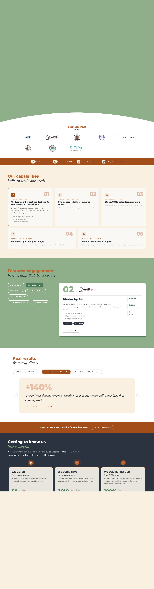

Aspire Digital is a faith-driven husband-and-wife web design studio based in Central Ohio, founded by Chris and Jaime Otten. With 30+ combined years of digital experience, they specialize in custom websites, AI-powered workflows, local SEO, CRM integrations, and long-term digital partnerships for small businesses that are serious about growth.
The results speak for themselves: NRX Asphalt saw +210% in qualified leads within six weeks of launch. Modern Maid saw +140% more leads after a redesign. Patina Salon Studio saw +90% more bookings with a 24/7 online booking integration. These aren't rounding errors — they're directional shifts in how these businesses earn. That's a track record worth marketing louder than it currently is.
The brand DNA is strong: defined by craft, rooted in faith. No handoffs, no templates, no ghosting after launch. Starting at $2,500 with delivery in 2–6 weeks and no long-term contracts — Aspire occupies a distinctive position in the market: boutique output at a price point that's genuinely accessible to local small businesses. Most small-business owners in Central Ohio can't afford the agency rates of a Marcy Design or a WebFX, but they also can't risk a freelancer who disappears. Aspire fills that gap beautifully — and needs to claim it more aggressively.
One critical note: madebyaspire.com was registered on March 22, 2026 — just over a month ago. The domain is brand new. Canonically and in the schema markup, the site still references the old domain aspiredigital.dev. This creates a split-identity situation in search engines that needs to be resolved before the new domain can build meaningful authority. It's the single most urgent technical issue in this audit.

Captured April 23, 2026 · madebyaspire.com
aspiredigital.dev. Google sees two identities. All domain authority built since 2018 is sitting on the old domain, not flowing to the new one. Fix: update canonical to https://madebyaspire.com, update schema URL, and ensure 301 redirect from aspiredigital.dev is permanent and indexed.
https://www.aspiredigital.dev/og-image.png. When the brief is shared via iMessage or Slack, it may pull a broken preview. Fix: update OG image URLs to madebyaspire.com domain.
The Columbus OH web design market has established players. Here's how Aspire compares to two direct local competitors and one national player you'll encounter in search results.
The landscape reveals a clear opening. Conspire is the immediate threat — similar positioning, same market, and they have 45 verified Google reviews to Aspire's zero. But Aspire's work is better documented and more results-oriented. Marcy Design is the incumbent — established, credible, but expensive and not particularly small-business focused. WebFX and national agencies price out 90% of Aspire's natural prospects.
Aspire's moat isn't price — it's the combination of faith-driven trust, real results documentation, and husband-wife accountability that no agency can replicate. The problem is that moat is only visible after someone lands on the site. The Google Business Profile gap means many prospects never make it there.
Small business owners in Central Ohio searching for web help use a different vocabulary than design professionals. Here's the landscape of terms that should be driving traffic to madebyaspire.com — and aren't yet, because the domain is brand new and has no content to match against them.
Currently, madebyaspire.com has no blog, no resource content, and no location-specific landing pages. This means every one of these search terms returns zero content matches. A competitor with a single well-optimized blog post on "how to choose a web designer in Columbus Ohio" will outrank Aspire on that term indefinitely — until Aspire publishes something.
The portfolio pages for individual clients (NRX Asphalt, Patina Salon, etc.) are a latent SEO asset. Each could become an individual case study page that ranks for that client's industry + "Columbus website" queries. These pages don't exist yet — only a combined portfolio grid does.
When someone in Ohio types "web design for" into Google, the autocomplete finishes with: small business, contractors, restaurants, salons, photographers, home services. Aspire has portfolio proof in home services (NRX, Keeler, B Clean), beauty (Patina), photography (PhotosbyB4), and retail (PetalsWings, Tees). That's a perfect content map waiting to happen.
Aspire is uniquely positioned for the AI search era — and needs to lean into it harder. The services page already mentions GEO analytics and AI-search optimization. But the agency's own web presence doesn't yet model the practices it sells.
"url": "https://www.aspiredigital.dev/" is the old domain. This tells AI crawlers that the authoritative source for Aspire Digital lives somewhere else. Fix urgently.
Voice queries tend to be longer and question-based: "Who does affordable website design near Columbus Ohio?" or "What's a good web agency for a small contractor business in Ohio?" Without FAQ schema or content that answers these naturally, Aspire can't appear in voice results. A simple FAQ section on the homepage or a dedicated FAQ page would close this gap quickly.
If this were a new client brief, these are the five things that would go on the build list — in priority order.
Update canonical tag, all schema URLs, and OG image paths from aspiredigital.dev to madebyaspire.com. Verify 301 redirects are permanent and properly indexed. Submit new sitemap to Google Search Console under the new domain. This is a 2-hour fix that unblocks everything else.
A home-services agency that helps clients dominate local search should itself rank in the local pack for "web design Columbus OH." With no GBP, Aspire is invisible in map results. Competitor Conspire (45 reviews, 5.0★) and Marcy Design (50 reviews, 5.0★) own this space right now. A verified GBP with accurate categories, photos of the work, and a link to madebyaspire.com would start accumulating reviews and local authority immediately.
The LinkedIn link in the footer returns a 404. B2B referrals — from realtors, attorneys, accountants who work with small businesses — often start with a LinkedIn lookup. Create or reclaim the company page, populate it with the same portfolio proof that's on the site, and post consistently. The Facebook situation also needs investigation — the page either needs to be made public or replaced with a properly configured business page.
The current portfolio is a summary grid. Each client deserves a dedicated case study: the before (what the business had), the challenge (what wasn't working), the solution (what Aspire built), and the results (with real numbers). This creates eight SEO landing pages — one per industry vertical — that can rank for "[industry] website Columbus Ohio" queries. NRX alone ("asphalt contractor website Ohio") is a near-zero-competition keyword with real search intent.
Three to four blog posts per quarter targeted at local search — "How to choose a web designer in Columbus," "5 signs your small business website is losing you leads," "What GEO analytics means for your Ohio business" — would build topical authority, support AI search citation, and give Aspire something to share on social without having to create new content from scratch every time. The playbook already exists; the publishing mechanism doesn't.
The same process Aspire uses for clients applies here. The difference is you already know the brand, the story, and the audience — so the discovery phase is shorter and the build can move fast.
The site is genuinely good — the problem is that 90% of the work that gets people to the site hasn't started yet. Here's what a full-stack digital presence looks like for Aspire in 2026.
Zero GBP presence means zero local pack visibility. Creating and optimizing a GBP is the single highest-ROI move available right now — it costs nothing and starts building review authority immediately.
Eight active clients and 100% satisfaction rate — but zero Google reviews to show for it. A simple post-launch email asking for a Google review from each client would create a review portfolio that validates everything the website claims.
The LinkedIn footer link returns a 404. A rebuilt company page with portfolio highlights, client results, and regular posts about the craft of web design would generate B2B referrals from professionals who refer small businesses to vendors.
No blog means no topical authority, no AI citations, and no top-of-funnel search traffic. Three to four posts per quarter — written in Aspire's honest, direct voice — would start compounding authority within 6 months.
Before/after screenshots, client result announcements, and process content (showing the build process) perform well for service businesses on Instagram and TikTok. The portfolio proof already exists — it just needs to move off the website and into social feeds.
Realtors, accountants, attorneys, and business coaches in Central Ohio regularly refer service providers to clients. A structured referral program — even informal — with partners in complementary fields would create a steady pipeline of warm prospects.
Numbers are directional, not guaranteed. But the math on these fixes is straightforward.
Aspire Digital is building something real. The portfolio is legitimate, the results are verifiable, and the brand story — faith-driven, husband-and-wife, craftsman standard — is genuinely differentiated from every agency in the Columbus market.
But right now, the infrastructure of discovery isn't there. A new domain with no authority, no GBP, and no local signal means the best agency in the room can still lose to a mediocre one with 50 Google reviews and a 10-year-old domain. That's the gap. And unlike building a new website from scratch, these gaps close fast — some within weeks of starting.
The opportunity Aspire is sitting on is this: you already have the proof, the process, and the positioning. You just haven't built the channels that carry the signal outward. Fix the domain, build the GBP, write the case studies, and the business that's been operating on referrals becomes one that attracts strangers who are already sold before they pick up the phone.
That's the next chapter — and none of it requires a bigger team, a different product, or a new business model. It requires the same craft applied inward.
This is the roadmap. The only thing left is to start.
Start the Conversationor reach Chris directly at Chris@aspiredigital.dev